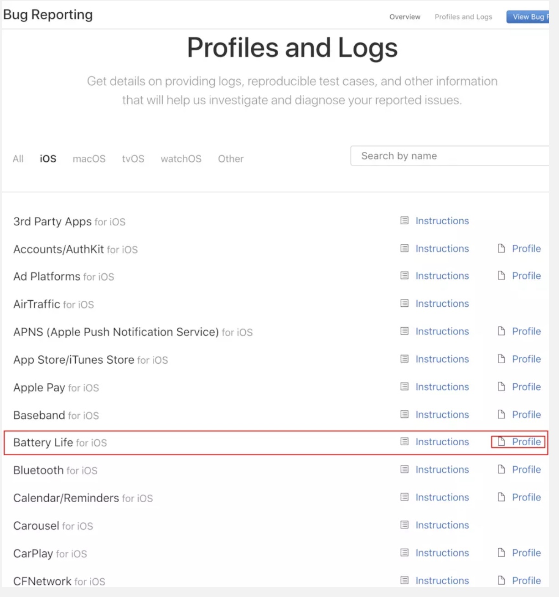

iOS 电量优化
耗电检测
1.普通检测
一般方法为非开发人员测试的方法，iOS12以上可在 设置->电池 查看每小时对应APP的耗电量百分比，再结合电量减少了多少，能粗略计算出对应APP的耗电量
2.Xcode(Energy Impact)
真机运行Xcode,可以查看APP对应的耗电信息
蓝色表示--合理
黄色--表示程序比较耗电
红色--表示仅仅轻度使用你的程序,就会很耗电
右边会显示各个模块耗电的百分比

3.Instruments(Energy log)
在手机端设置->开发者->Logging->打开Energy->Start Recording可以开始录制一段时间手机的电量消耗，我们可以在这段时间内运行我们APP对应的模块，以此来检测这个模块的耗电量；录制完成后连接电脑，打开Instruments中的Energy Log,点击工具栏中import Logged Data from Device，就可以得到了电池损耗日志
- Energy Usage Level的值(0 -- 20),值越大表示越耗电
- CPU Activity 表示CPU各种活动

4.利用sysdiagnose进行耗电量测试
sysdiagnose是苹果的日志系统，苹果经常会询问是否要官方帮忙诊断和定位各种问题，使用的就是sysdiagnose的日志。Sysdiagnose很庞大，记录电池、第三方APP、各种系统功能和应用的所有运行情况。比如，设置->电池里面的电池用量就是使用Sysdiagnose的数据。下面具体介绍如何使用Sysdiagnose进行耗电测试。
首先，Sysdiagnose需要一个开发者账号，在手机上安装所需要的证书，安装证书之后，手机不需要越狱也可以获得数据
官网下载证书 Profiles and Logs。（需要开发者证书）

安装完描述文件后等待一段时间后手机连上电脑，通过 iTunes 同步到电脑上
打开~/Library/Logs/CrashReporter/MobileDevice ->手机名->powlog_xxxx.PLSQL 文件
其中最重要的表是PLBatteryAgent_EventBackward_Battery整机电量信息，每20s采集一次，在关闭其他app的情况下，可以近似的认为是所测app的耗电，如图

这个表中记录了对应时间戳的手机剩余电量，电压，电流（正数是在充电，负数是耗电），这个表还有温度数据，可以反映测试期间手机的温度变化
1、电流以mA计，iphone工作时候，电流一般在0～700mA之间，超过500mA手机就很容易发热
2、电压以mV计，iphone工作时候电压在4V左右，当然电量比较充足的时候比低电量时候电压高，但是一般不超过0.2V
3、剩余电量是以mAh计，他和最大电量是相对值，我们看到的电量百分比是这两个值的比值。
4、温度可以作为参考值，测试中最高温度是37度左右，能明显感到发烫。
5、每一个安装到iPhone的应用，在系统级都会有一个ID标注，称作结点ID。
6、系统中每个应用都有几种状态，分别是不运行、前台活跃、前台不活跃（一般应用间切换时出现）、后台、暂停（在后台但没有运行，程序还在内存中）。
以上这些状态都可以从数据库表中获得。
有了这些数据就能算出这段时间的耗电量 耗电量（J）=电流（A）*电压（V）*时间（s）。
使用sysdiagnose进行iOS耗电量测试一般流程如下：
- 1、准备测试用例
- 2、执行前手机保持80%以上的电量（这个电量手机电压比较稳定），手机降温到室温
- 3、测试时候断开电源，手动操作
- 4、记录每个用例的开始执行时间，结束时间（时间戳）
- 5、执行结束，记录时间，等待5分钟左右
- 6、使用ituns同步数据到电脑（可以几次执行结果一起同步），进行后续计算
为方便测试，写了一个计算一段时间耗电量的Python程序
import sqlite3
conn = sqlite3.connect('powerlog_2019-06-16-2019-06-18_AD7EBC89.PLSQL')
cursor = conn.cursor()
cursor.execute('select id,timestamp,Level,Voltage,InstantAmperage from PLBatteryAgent_EventBackward_Battery where timestamp > 1560765600 and timestamp < 1560769200')
values = cursor.fetchall()
cursor.close()
conn.close()
sum = 0
oldTime = 0
sumTime = 0
for value in values:
print(value[0], value[1], value[2], value[3], value[4])
if oldTime > 0:
t = value[1] - oldTime
sumTime += t
sum += value[3]/1000 * value[4]/1000 * t
oldTime = value[1]
print("总时间:", sumTime, '秒')
print('总消耗:', sum, 'J')
print('平均:', sum/sumTime, 'J/秒')
实践
结合上面的检测方法，显然sysdiagnose能准确的算出一段时间的耗电量，便于优化前后的对比
以下为优化一个后台持续定位并上报的APP前后的比较
优化前
测试1小时电量消耗6%
总时间: 3570.9282608032227 秒
总消耗: -1205.451684617769 J
平均: -0.28156591541035575 J/秒
定位精度优化后
主要修改了
- 持续定位distanceFilter改为10米
- 持续定位desiredAccuracy改为 kCLLocationAccuracyNearestTenMeters
- 减少多余的逆地理信息
测试1小时电量消耗2%
总时间: 3570.607927083969 秒
总消耗: -1185.5812158716094 J
平均: -0.3320390365121509 J/秒
使用播放无声音乐方案
此方案主要是不使用持续定位，用后台播放无声音乐的方式让APP保活，再在指定时间间隔内进行定位
测试1小时电量消耗3%
总时间: 3572.893536090851 秒
总消耗: -1007.2904749504223 J
平均: -0.2819256898576698 J/秒
而且无声播放夜间不会定位，消耗更少，所以我们最后采用了播放无声音乐的方案，同时发现电量百分比跟电量消耗的误差还是很大的，因为在电量刚充满时消耗2%和电量不足消耗的2%也是完全不相等的，所以最好使用表中数据进行计算电量消耗更准确
减少耗电优化点
- 减少请求(合并上传)
- 按需调用(如定位不需要持续时可用其它方案)
- 频率控制(如上报、定位等的频率)
- 避免CPU、GPU大量操作或者重复计算(如缓存计算结果、减少等方法)